Zeta functions, L-series and polylogarithms¶
This section includes the Riemann zeta functions and associated functions pertaining to analytic number theory.
Riemann-Hurwitz zeta function and Dirichlet series¶
zeta()¶
- mpmath.zeta(s, a=1, derivative=0)¶
Computes the Riemann zeta function
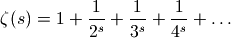
or, with 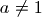, the more general Hurwitz zeta function
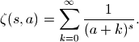
Optionally, zeta(s, a, n) computes the
 -th derivative with
respect to
-th derivative with
respect to  ,
,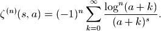
Although these series only converge for 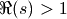, the Riemann and Hurwitz zeta functions are defined through analytic continuation for arbitrary complex 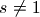 (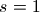 is a pole).
The implementation uses three algorithms: the Borwein algorithm for the Riemann zeta function when
is close to the real line;
the Riemann-Siegel formula for the Riemann zeta function when is
large imaginary, and Euler-Maclaurin summation in all other cases.
The reflection formula for  is implemented in some cases.
The algorithm can be chosen with method = 'borwein',
method='riemann-siegel' or method = 'euler-maclaurin'.
is implemented in some cases.
The algorithm can be chosen with method = 'borwein',
method='riemann-siegel' or method = 'euler-maclaurin'.The parameter
 is usually a rational number 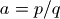, and may be specified
as such by passing an integer tuple 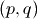. Evaluation is supported for
arbitrary complex , but may be slow and/or inaccurate when for
nonrational or when computing derivatives.
is usually a rational number 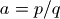, and may be specified
as such by passing an integer tuple 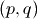. Evaluation is supported for
arbitrary complex , but may be slow and/or inaccurate when for
nonrational or when computing derivatives.Examples
Some values of the Riemann zeta function:
>>> from mpmath import * >>> mp.dps = 25; mp.pretty = True >>> zeta(2); pi**2 / 6 1.644934066848226436472415 1.644934066848226436472415 >>> zeta(0) -0.5 >>> zeta(-1) -0.08333333333333333333333333 >>> zeta(-2) 0.0
For large positive
, 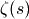 rapidly approaches 1:>>> zeta(50) 1.000000000000000888178421 >>> zeta(100) 1.0 >>> zeta(inf) 1.0 >>> 1-sum((zeta(k)-1)/k for k in range(2,85)); +euler 0.5772156649015328606065121 0.5772156649015328606065121 >>> nsum(lambda k: zeta(k)-1, [2, inf]) 1.0
Evaluation is supported for complex
and :>>> zeta(-3+4j) (-0.03373057338827757067584698 + 0.2774499251557093745297677j) >>> zeta(2+3j, -1+j) (389.6841230140842816370741 + 295.2674610150305334025962j)
The Riemann zeta function has so-called nontrivial zeros on the critical line
 :
:>>> findroot(zeta, 0.5+14j); zetazero(1) (0.5 + 14.13472514173469379045725j) (0.5 + 14.13472514173469379045725j) >>> findroot(zeta, 0.5+21j); zetazero(2) (0.5 + 21.02203963877155499262848j) (0.5 + 21.02203963877155499262848j) >>> findroot(zeta, 0.5+25j); zetazero(3) (0.5 + 25.01085758014568876321379j) (0.5 + 25.01085758014568876321379j) >>> chop(zeta(zetazero(10))) 0.0
Evaluation on and near the critical line is supported for large heights 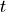 by means of the Riemann-Siegel formula (currently for 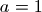, 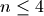):
>>> zeta(0.5+100000j) (1.073032014857753132114076 + 5.780848544363503984261041j) >>> zeta(0.75+1000000j) (0.9535316058375145020351559 + 0.9525945894834273060175651j) >>> zeta(0.5+10000000j) (11.45804061057709254500227 - 8.643437226836021723818215j) >>> zeta(0.5+100000000j, derivative=1) (51.12433106710194942681869 + 43.87221167872304520599418j) >>> zeta(0.5+100000000j, derivative=2) (-444.2760822795430400549229 - 896.3789978119185981665403j) >>> zeta(0.5+100000000j, derivative=3) (3230.72682687670422215339 + 14374.36950073615897616781j) >>> zeta(0.5+100000000j, derivative=4) (-11967.35573095046402130602 - 218945.7817789262839266148j) >>> print zeta(1+10000000j) # off the line (2.859846483332530337008882 + 0.491808047480981808903986j) >>> print zeta(1+10000000j, derivative=1) (-4.333835494679647915673205 - 0.08405337962602933636096103j) >>> print zeta(1+10000000j, derivative=4) (453.2764822702057701894278 - 581.963625832768189140995j)
For investigation of the zeta function zeros, the Riemann-Siegel Z-function is often more convenient than working with the Riemann zeta function directly (see siegelz()).
Some values of the Hurwitz zeta function:
>>> zeta(2, 3); -5./4 + pi**2/6 0.3949340668482264364724152 0.3949340668482264364724152 >>> zeta(2, (3,4)); pi**2 - 8*catalan 2.541879647671606498397663 2.541879647671606498397663
For positive integer values of
, the Hurwitz zeta function is
equivalent to a polygamma function (except for a normalizing factor):>>> zeta(4, (1,5)); psi(3, '1/5')/6 625.5408324774542966919938 625.5408324774542966919938
Evaluation of derivatives:
>>> zeta(0, 3+4j, 1); loggamma(3+4j) - ln(2*pi)/2 (-2.675565317808456852310934 + 4.742664438034657928194889j) (-2.675565317808456852310934 + 4.742664438034657928194889j) >>> zeta(2, 1, 20) 2432902008176640000.000242 >>> zeta(3+4j, 5.5+2j, 4) (-0.140075548947797130681075 - 0.3109263360275413251313634j) >>> zeta(0.5+100000j, 1, 4) (-10407.16081931495861539236 + 13777.78669862804508537384j)
Generating a Taylor series at 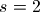 using derivatives:
>>> for k in range(11): print zeta(2,1,k)/fac(k), "*", "(s-2)^%i" % k ... 1.644934066848226436472415 * (s-2)^0 -0.9375482543158437537025741 * (s-2)^1 0.9946401171494505117104293 * (s-2)^2 -1.000024300473840810940657 * (s-2)^3 1.000061933072352565457512 * (s-2)^4 -1.000006869443931806408941 * (s-2)^5 1.000000173233769531820592 * (s-2)^6 -0.9999999569989868493432399 * (s-2)^7 0.9999999937218844508684206 * (s-2)^8 -0.9999999996355013916608284 * (s-2)^9 1.000000000004610645020747 * (s-2)^10
Evaluation at zero and for negative integer
:>>> zeta(0, 10) -9.5 >>> zeta(-2, (2,3)); mpf(1)/81 0.01234567901234567901234568 0.01234567901234567901234568 >>> zeta(-3+4j, (5,4)) (0.2899236037682695182085988 + 0.06561206166091757973112783j) >>> zeta(-3.25, 1/pi) -0.0005117269627574430494396877 >>> extraprec(20)(zeta)(-3.5, pi, 1) # XXX: extra precision 11.156360390440003294709 >>> zeta(-100.5, (8,3)) -4.68162300487989766727122e+77 >>> zeta(-10.5, (-8,3)) (-0.01521913704446246609237979 + 29907.72510874248161608216j) >>> zeta(-1000.5, (-8,3)) (1.031911949062334538202567e+1770 + 1.519555750556794218804724e+426j) >>> zeta(-1+j, 3+4j) (-16.32988355630802510888631 - 22.17706465801374033261383j) >>> zeta(-1+j, 3+4j, 2) (32.48985276392056641594055 - 51.11604466157397267043655j) >>> diff(lambda s: zeta(s, 3+4j), -1+j, 2) (32.48985276392056641594055 - 51.11604466157397267043655j)
References
altzeta()¶
- mpmath.altzeta(s)¶
Gives the Dirichlet eta function, 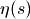, also known as the alternating zeta function. This function is defined in analogy with the Riemann zeta function as providing the sum of the alternating series
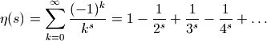
The eta function, unlike the Riemann zeta function, is an entire function, having a finite value for all complex
. The special case
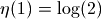 gives the value of the alternating harmonic series.The alternating zeta function may expressed using the Riemann zeta function as
 . It can also be expressed
in terms of the Hurwitz zeta function (hurwitz()), for example using
dirichlet() (see documentation for that function).
. It can also be expressed
in terms of the Hurwitz zeta function (hurwitz()), for example using
dirichlet() (see documentation for that function).Examples
Some special values are:
>>> from mpmath import * >>> mp.dps = 15; mp.pretty = True >>> altzeta(1) 0.693147180559945 >>> altzeta(0) 0.5 >>> altzeta(-1) 0.25 >>> altzeta(-2) 0.0
An example of a sum that can be computed more accurately and efficiently via altzeta() than via numerical summation:
>>> sum(-(-1)**n / n**2.5 for n in range(1, 100)) 0.86720495150398402 >>> altzeta(2.5) 0.867199889012184
At positive even integers, the Dirichlet eta function evaluates to a rational multiple of a power of 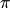:
>>> altzeta(2) 0.822467033424113 >>> pi**2/12 0.822467033424113
Like the Riemann zeta function, , approaches 1 as
approaches positive infinity, although it does
so from below rather than from above:>>> altzeta(30) 0.999999999068682 >>> altzeta(inf) 1.0 >>> mp.pretty = False >>> altzeta(1000, rounding='d') mpf('0.99999999999999989') >>> altzeta(1000, rounding='u') mpf('1.0')
References
dirichletl()¶
- mpmath.dirichlet(s, chi, derivative=0)¶
Evaluates the Dirichlet L-function
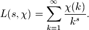
where 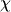 is a periodic sequence of length 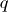 which should be supplied in the form of a list 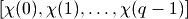. Strictly, should be a Dirichlet character, but any periodic sequence will work.
For example, dirichlet(s, [1]) gives the ordinary Riemann zeta function and dirichlet(s, [-1,1]) gives the alternating zeta function (Dirichlet eta function).
Also the derivative with respect to
(currently only a first
derivative) can be evaluated.Examples
The ordinary Riemann zeta function:
>>> from mpmath import * >>> mp.dps = 25; mp.pretty = True >>> dirichlet(3, [1]); zeta(3) 1.202056903159594285399738 1.202056903159594285399738 >>> dirichlet(1, [1]) +inf
The alternating zeta function:
>>> dirichlet(1, [-1,1]); ln(2) 0.6931471805599453094172321 0.6931471805599453094172321
The following defines the Dirichlet beta function 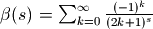 and verifies several values of this function:
>>> B = lambda s, d=0: dirichlet(s, [0, 1, 0, -1], d) >>> B(0); 1./2 0.5 0.5 >>> B(1); pi/4 0.7853981633974483096156609 0.7853981633974483096156609 >>> B(2); +catalan 0.9159655941772190150546035 0.9159655941772190150546035 >>> B(2,1); diff(B, 2) 0.08158073611659279510291217 0.08158073611659279510291217 >>> B(-1,1); 2*catalan/pi 0.5831218080616375602767689 0.5831218080616375602767689 >>> B(0,1); log(gamma(0.25)**2/(2*pi*sqrt(2))) 0.3915943927068367764719453 0.3915943927068367764719454 >>> B(1,1); 0.25*pi*(euler+2*ln2+3*ln(pi)-4*ln(gamma(0.25))) 0.1929013167969124293631898 0.1929013167969124293631898
A custom L-series of period 3:
>>> dirichlet(2, [2,0,1]) 0.7059715047839078092146831 >>> 2*nsum(lambda k: (3*k)**-2, [1,inf]) + \ ... nsum(lambda k: (3*k+2)**-2, [0,inf]) 0.7059715047839078092146831
Prime zeta function¶
primezeta()¶
- mpmath.primezeta(s)¶
Computes the prime zeta function, which is defined in analogy with the Riemann zeta function (zeta()) as
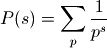
where the sum is taken over all prime numbers 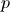. Although this sum only converges for 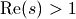, the function is defined by analytic continuation in the half-plane 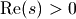.
Examples
Arbitrary-precision evaluation for real and complex arguments is supported:
>>> from mpmath import * >>> mp.dps = 30; mp.pretty = True >>> primezeta(2) 0.452247420041065498506543364832 >>> primezeta(pi) 0.15483752698840284272036497397 >>> mp.dps = 50 >>> primezeta(3) 0.17476263929944353642311331466570670097541212192615 >>> mp.dps = 20 >>> primezeta(3+4j) (-0.12085382601645763295 - 0.013370403397787023602j)
The prime zeta function has a logarithmic pole at , with residue equal to the difference of the Mertens and Euler constants:
>>> primezeta(1) +inf >>> extradps(25)(lambda x: primezeta(1+x)+log(x))(+eps) -0.31571845205389007685 >>> mertens-euler -0.31571845205389007685
The analytic continuation to 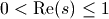 is implemented. In this strip the function exhibits very complex behavior; on the unit interval, it has poles at 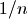 for every squarefree integer
:>>> primezeta(0.5) # Pole at s = 1/2 (-inf + 3.1415926535897932385j) >>> primezeta(0.25) (-1.0416106801757269036 + 0.52359877559829887308j) >>> primezeta(0.5+10j) (0.54892423556409790529 + 0.45626803423487934264j)
Although evaluation works in principle for any , it should be noted that the evaluation time increases exponentially as
approaches the imaginary axis.For large 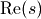, 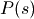 is asymptotic to 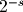:
>>> primezeta(inf) 0.0 >>> primezeta(10), mpf(2)**-10 (0.00099360357443698021786, 0.0009765625) >>> primezeta(1000) 9.3326361850321887899e-302 >>> primezeta(1000+1000j) (-3.8565440833654995949e-302 - 8.4985390447553234305e-302j)
References
Carl-Erik Froberg, “On the prime zeta function”, BIT 8 (1968), pp. 187-202.
Zeta function zeros¶
zetazero()¶
- mpmath.zetazero(n, verbose=False)¶
Computes the
-th nontrivial zero of on the critical line,
i.e. returns an approximation of the -th largest complex number
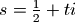 for which 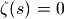. Equivalently, the
imaginary part is a zero of the Z-function (siegelz()).Examples
The first few zeros:
>>> from mpmath import * >>> mp.dps = 25; mp.pretty = True >>> zetazero(1) (0.5 + 14.13472514173469379045725j) >>> zetazero(2) (0.5 + 21.02203963877155499262848j) >>> zetazero(20) (0.5 + 77.14484006887480537268266j)
Verifying that the values are zeros:
>>> for n in range(1,5): ... s = zetazero(n) ... chop(zeta(s)), chop(siegelz(s.imag)) ... (0.0, 0.0) (0.0, 0.0) (0.0, 0.0) (0.0, 0.0)
Negative indices give the conjugate zeros (
 is undefined):
is undefined):>>> zetazero(-1) (0.5 - 14.13472514173469379045725j)
zetazero() supports arbitrarily large
and arbitrary precision:>>> mp.dps = 15 >>> zetazero(1234567) (0.5 + 727690.906948208j) >>> mp.dps = 50 >>> zetazero(1234567) (0.5 + 727690.9069482075392389420041147142092708393819935j) >>> chop(zeta(_)/_) 0.0
with info=True, zetazero() gives additional information:
>>> mp.dps = 15 >>> zetazero(542964976,info=True) ((0.5 + 209039046.578535j), [542964969, 542964978], 6, '(013111110)')
This means that the zero is between Gram points 542964969 and 542964978; it is the 6-th zero between them. Finally (01311110) is the pattern of zeros in this interval. The numbers indicate the number of zeros in each Gram interval (Rosser blocks between parenthesis). In this case there is only one Rosser block of length nine.
Riemann-Siegel functions and Gram points¶
These functions are used for the study of the Riemann zeta function in the critical strip.
siegelz()¶
- mpmath.siegelz(t)¶
Computes the Z-function, also known as the Riemann-Siegel Z function,
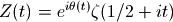
where is the Riemann zeta function (zeta()) and where 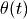 denotes the Riemann-Siegel theta function (see siegeltheta()).
Evaluation is supported for real and complex arguments:
>>> from mpmath import * >>> mp.dps = 25; mp.pretty = True >>> siegelz(1) -0.7363054628673177346778998 >>> siegelz(3+4j) (-0.1852895764366314976003936 - 0.2773099198055652246992479j)
The Z-function has a Maclaurin expansion:
>>> nprint(chop(taylor(siegelz, 0, 4))) [-1.46035, 0.0, 2.73588, 0.0, -8.39357]
The Z-function 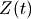 is equal to 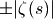 on the critical line 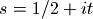 (i.e. for real arguments to 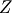). Its zeros coincide with those of the Riemann zeta function:
>>> findroot(siegelz, 14) 14.13472514173469379045725 >>> findroot(siegelz, 20) 21.02203963877155499262848 >>> findroot(zeta, 0.5+14j) (0.5 + 14.13472514173469379045725j) >>> findroot(zeta, 0.5+20j) (0.5 + 21.02203963877155499262848j)
Since the Z-function is real-valued on the critical line (and unlike 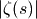 analytic), it is useful for investigating the zeros of the Riemann zeta function. For example, one can use a root-finding algorithm based on sign changes:
>>> findroot(siegelz, [100, 200], solver='bisect') 176.4414342977104188888926
To locate roots, Gram points 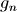 which can be computed by grampoint() are useful. If 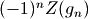 is positive for two consecutive
, then must have
a zero between those points:>>> g10 = grampoint(10) >>> g11 = grampoint(11) >>> (-1)**10 * siegelz(g10) > 0 True >>> (-1)**11 * siegelz(g11) > 0 True >>> findroot(siegelz, [g10, g11], solver='bisect') 56.44624769706339480436776 >>> g10, g11 (54.67523744685325626632663, 57.54516517954725443703014)
siegeltheta()¶
- mpmath.siegeltheta(t)¶
Computes the Riemann-Siegel theta function,
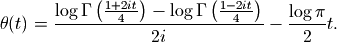
The Riemann-Siegel theta function is important in providing the phase factor for the Z-function (see siegelz()). Evaluation is supported for real and complex arguments:
>>> from mpmath import * >>> mp.dps = 25; mp.pretty = True >>> siegeltheta(0) 0.0 >>> siegeltheta(inf) +inf >>> siegeltheta(-inf) -inf >>> siegeltheta(1) -1.767547952812290388302216 >>> siegeltheta(10+0.25j) (-3.068638039426838572528867 + 0.05804937947429712998395177j)
The Riemann-Siegel theta function has odd symmetry around
 ,
two local extreme points and three real roots including 0 (located
symmetrically):
,
two local extreme points and three real roots including 0 (located
symmetrically):>>> nprint(chop(taylor(siegeltheta, 0, 5))) [0.0, -2.68609, 0.0, 2.69433, 0.0, -6.40218] >>> findroot(diffun(siegeltheta), 7) 6.28983598883690277966509 >>> findroot(siegeltheta, 20) 17.84559954041086081682634
For large , there is a famous asymptotic formula for , to first order given by:
>>> t = mpf(10**6) >>> siegeltheta(t) 5488816.353078403444882823 >>> -t*log(2*pi/t)/2-t/2 5488816.745777464310273645
grampoint()¶
- mpmath.grampoint(n)¶
Gives the
-th Gram point , defined as the solution
to the equation 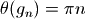 where
is the Riemann-Siegel theta function (siegeltheta()).The first few Gram points are:
>>> from mpmath import * >>> mp.dps = 25; mp.pretty = True >>> grampoint(0) 17.84559954041086081682634 >>> grampoint(1) 23.17028270124630927899664 >>> grampoint(2) 27.67018221781633796093849 >>> grampoint(3) 31.71797995476405317955149
Checking the definition:
>>> siegeltheta(grampoint(3)) 9.42477796076937971538793 >>> 3*pi 9.42477796076937971538793
A large Gram point:
>>> grampoint(10**10) 3293531632.728335454561153
Gram points are useful when studying the Z-function (siegelz()). See the documentation of that function for additional examples.
grampoint() can solve the defining equation for nonintegral
. There is a fixed point where  :
:>>> findroot(lambda x: grampoint(x) - x, 10000) 9146.698193171459265866198
References
Stieltjes constants¶
stieltjes()¶
- mpmath.stieltjes(n, a=1)¶
For a nonnegative integer
, stieltjes(n) computes the
-th Stieltjes constant 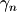, defined as the
-th coefficient in the Laurent series expansion of the
Riemann zeta function around the pole at . That is,
we have: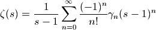
More generally, stieltjes(n, a) gives the corresponding coefficient
 for the Hurwitz zeta function
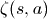 (with 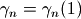).
for the Hurwitz zeta function
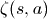 (with 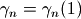).Examples
The zeroth Stieltjes constant is just Euler’s constant 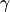:
>>> from mpmath import * >>> mp.dps = 15; mp.pretty = True >>> stieltjes(0) 0.577215664901533
Some more values are:
>>> stieltjes(1) -0.0728158454836767 >>> stieltjes(10) 0.000205332814909065 >>> stieltjes(30) 0.00355772885557316 >>> stieltjes(1000) -1.57095384420474e+486 >>> stieltjes(2000) 2.680424678918e+1109 >>> stieltjes(1, 2.5) -0.23747539175716
An alternative way to compute :
>>> diff(extradps(15)(lambda x: 1/(x-1) - zeta(x)), 1) -0.0728158454836767
stieltjes() supports arbitrary precision evaluation:
>>> mp.dps = 50 >>> stieltjes(2) -0.0096903631928723184845303860352125293590658061013408
Algorithm
stieltjes() numerically evaluates the integral in the following representation due to Ainsworth, Howell and Coffey [1], [2]:
For some reference values with , see e.g. [4].
References
- O. R. Ainsworth & L. W. Howell, “An integral representation of the generalized Euler-Mascheroni constants”, NASA Technical Paper 2456 (1985), http://ntrs.nasa.gov/archive/nasa/casi.ntrs.nasa.gov/19850014994_1985014994.pdf
- M. W. Coffey, “The Stieltjes constants, their relation to the coefficients, and representation of the Hurwitz zeta function”, arXiv:0706.0343v1 http://arxiv.org/abs/0706.0343
- http://mathworld.wolfram.com/StieltjesConstants.html
- http://pi.lacim.uqam.ca/piDATA/stieltjesgamma.txt
Polylogarithms¶
polylog()¶
- mpmath.polylog(s, z)¶
Computes the polylogarithm, defined by the sum
This series is convergent only for , so elsewhere the analytic continuation is implied.
The polylogarithm should not be confused with the logarithmic integral (also denoted by Li or li), which is implemented as li().
Examples
The polylogarithm satisfies a huge number of functional identities. A sample of polylogarithm evaluations is shown below:
>>> from mpmath import * >>> mp.dps = 15; mp.pretty = True >>> polylog(1,0.5), log(2) (0.693147180559945, 0.693147180559945) >>> polylog(2,0.5), (pi**2-6*log(2)**2)/12 (0.582240526465012, 0.582240526465012) >>> polylog(2,-phi), -log(phi)**2-pi**2/10 (-1.21852526068613, -1.21852526068613) >>> polylog(3,0.5), 7*zeta(3)/8-pi**2*log(2)/12+log(2)**3/6 (0.53721319360804, 0.53721319360804)
polylog() can evaluate the analytic continuation of the polylogarithm when
is an integer:>>> polylog(2, 10) (0.536301287357863 - 7.23378441241546j) >>> polylog(2, -10) -4.1982778868581 >>> polylog(2, 10j) (-3.05968879432873 + 3.71678149306807j) >>> polylog(-2, 10) -0.150891632373114 >>> polylog(-2, -10) 0.067618332081142 >>> polylog(-2, 10j) (0.0384353698579347 + 0.0912451798066779j)
Some more examples, with arguments on the unit circle (note that the series definition cannot be used for computation here):
>>> polylog(2,j) (-0.205616758356028 + 0.915965594177219j) >>> j*catalan-pi**2/48 (-0.205616758356028 + 0.915965594177219j) >>> polylog(3,exp(2*pi*j/3)) (-0.534247512515375 + 0.765587078525922j) >>> -4*zeta(3)/9 + 2*j*pi**3/81 (-0.534247512515375 + 0.765587078525921j)
Polylogarithms of different order are related by integration and differentiation:
>>> s, z = 3, 0.5 >>> polylog(s+1, z) 0.517479061673899 >>> quad(lambda t: polylog(s,t)/t, [0, z]) 0.517479061673899 >>> z*diff(lambda t: polylog(s+2,t), z) 0.517479061673899
Taylor series expansions around
 are:
are:>>> for n in range(-3, 4): ... nprint(taylor(lambda x: polylog(n,x), 0, 5)) ... [0.0, 1.0, 8.0, 27.0, 64.0, 125.0] [0.0, 1.0, 4.0, 9.0, 16.0, 25.0] [0.0, 1.0, 2.0, 3.0, 4.0, 5.0] [0.0, 1.0, 1.0, 1.0, 1.0, 1.0] [0.0, 1.0, 0.5, 0.333333, 0.25, 0.2] [0.0, 1.0, 0.25, 0.111111, 0.0625, 0.04] [0.0, 1.0, 0.125, 0.037037, 0.015625, 0.008]
The series defining the polylogarithm is simultaneously a Taylor series and an L-series. For certain values of
 , the
polylogarithm reduces to a pure zeta function:
, the
polylogarithm reduces to a pure zeta function:>>> polylog(pi, 1), zeta(pi) (1.17624173838258, 1.17624173838258) >>> polylog(pi, -1), -altzeta(pi) (-0.909670702980385, -0.909670702980385)
Evaluation for arbitrary, nonintegral
is supported
for within the unit circle:>>> polylog(3+4j, 0.25) (0.24258605789446 - 0.00222938275488344j) >>> nsum(lambda k: 0.25**k / k**(3+4j), [1,inf]) (0.24258605789446 - 0.00222938275488344j)
It is also currently supported outside of the unit circle for
not too large in magnitude:>>> polylog(1+j, 20+40j) (-7.1421172179728 - 3.92726697721369j) >>> polylog(1+j, 200+400j) Traceback (most recent call last): ... NotImplementedError: polylog for arbitrary s and z
References
- Richard Crandall, “Note on fast polylogarithm computation” http://people.reed.edu/~crandall/papers/Polylog.pdf
- http://en.wikipedia.org/wiki/Polylogarithm
- http://mathworld.wolfram.com/Polylogarithm.html
Clausen functions¶
clsin()¶
- mpmath.clsin(s, z)¶
Computes the Clausen sine function, defined formally by the series
The special case (i.e. clsin(2,z)) is the classical “Clausen function”. More generally, the Clausen function is defined for complex
and , even when the series does not converge. The
Clausen function is related to the polylogarithm (polylog()) asand this representation can be taken to provide the analytic continuation of the series. The complementary function clcos() gives the corresponding cosine sum.
Examples
Evaluation for arbitrarily chosen
and :>>> from mpmath import * >>> mp.dps = 25; mp.pretty = True >>> s, z = 3, 4 >>> clsin(s, z); nsum(lambda k: sin(z*k)/k**s, [1,inf]) -0.6533010136329338746275795 -0.6533010136329338746275795
Using instead of
gives an alternating series:>>> clsin(s, z+pi) 0.8860032351260589402871624 >>> nsum(lambda k: (-1)**k*sin(z*k)/k**s, [1,inf]) 0.8860032351260589402871624
With , the sum can be expressed in closed form using elementary functions:
>>> z = 1 + sqrt(3) >>> clsin(1, z) 0.2047709230104579724675985 >>> chop((log(1-exp(-j*z)) - log(1-exp(j*z)))/(2*j)) 0.2047709230104579724675985 >>> nsum(lambda k: sin(k*z)/k, [1,inf]) 0.2047709230104579724675985
The classical Clausen function gives the value of the integral for :
>>> cl2 = lambda t: clsin(2, t) >>> cl2(3.5) -0.2465045302347694216534255 >>> -quad(lambda x: ln(2*sin(0.5*x)), [0, 3.5]) -0.2465045302347694216534255
This function is symmetric about with zeros and extreme points:
>>> cl2(0); cl2(pi/3); chop(cl2(pi)); cl2(5*pi/3); chop(cl2(2*pi)) 0.0 1.014941606409653625021203 0.0 -1.014941606409653625021203 0.0
Catalan’s constant is a special value:
>>> cl2(pi/2) 0.9159655941772190150546035 >>> +catalan 0.9159655941772190150546035
The Clausen sine function can be expressed in closed form when
is an odd integer (becoming zero when < 0):>>> z = 1 + sqrt(2) >>> clsin(1, z); (pi-z)/2 0.3636895456083490948304773 0.3636895456083490948304773 >>> clsin(3, z); pi**2/6*z - pi*z**2/4 + z**3/12 0.5661751584451144991707161 0.5661751584451144991707161 >>> clsin(-1, z) 0.0 >>> clsin(-3, z) 0.0
It can also be expressed in closed form for even integer , providing a finite sum for series such as
 :
:>>> z = 1 + sqrt(2) >>> clsin(0, z) 0.1903105029507513881275865 >>> cot(z/2)/2 0.1903105029507513881275865 >>> clsin(-2, z) -0.1089406163841548817581392 >>> -cot(z/2)*csc(z/2)**2/4 -0.1089406163841548817581392
Call with pi=True to multiply
by exactly:>>> clsin(3, 3*pi) -8.892316224968072424732898e-26 >>> clsin(3, 3, pi=True) 0.0
Evaluation for complex
, in a nonconvergent case:>>> s, z = -1-j, 1+2j >>> clsin(s, z) (-0.593079480117379002516034 + 0.9038644233367868273362446j) >>> extraprec(20)(nsum)(lambda k: sin(k*z)/k**s, [1,inf]) (-0.593079480117379002516034 + 0.9038644233367868273362446j)
clcos()¶
- mpmath.clcos(s, z)¶
Computes the Clausen cosine function, defined formally by the series
This function is complementary to the Clausen sine function clsin(). In terms of the polylogarithm,
Examples
Evaluation for arbitrarily chosen
and :>>> from mpmath import * >>> mp.dps = 25; mp.pretty = True >>> s, z = 3, 4 >>> clcos(s, z); nsum(lambda k: cos(z*k)/k**s, [1,inf]) -0.6518926267198991308332759 -0.6518926267198991308332759
Using instead of
gives an alternating series:>>> s, z = 3, 0.5 >>> clcos(s, z+pi) -0.8155530586502260817855618 >>> nsum(lambda k: (-1)**k*cos(z*k)/k**s, [1,inf]) -0.8155530586502260817855618
With , the sum can be expressed in closed form using elementary functions:
>>> z = 1 + sqrt(3) >>> clcos(1, z) -0.6720334373369714849797918 >>> chop(-0.5*(log(1-exp(j*z))+log(1-exp(-j*z)))) -0.6720334373369714849797918 >>> -log(abs(2*sin(0.5*z))) # Equivalent to above when z is real -0.6720334373369714849797918 >>> nsum(lambda k: cos(k*z)/k, [1,inf]) -0.6720334373369714849797918
It can also be expressed in closed form when
is an even integer.
For example,>>> clcos(2,z) -0.7805359025135583118863007 >>> pi**2/6 - pi*z/2 + z**2/4 -0.7805359025135583118863007
The case gives the renormalized sum of (which happens to be the same for any value of
):>>> clcos(0, z) -0.5 >>> nsum(lambda k: cos(k*z), [1,inf]) -0.5
Also the sums
and
for higher integer powers can be done in closed form. They are zero when
is positive and even ( negative and even):>>> clcos(-1, z); 1/(2*cos(z)-2) -0.2607829375240542480694126 -0.2607829375240542480694126 >>> clcos(-3, z); (2+cos(z))*csc(z/2)**4/8 0.1472635054979944390848006 0.1472635054979944390848006 >>> clcos(-2, z); clcos(-4, z); clcos(-6, z) 0.0 0.0 0.0
With , the series reduces to that of the Riemann zeta function (more generally, if , it is a finite sum over Hurwitz zeta function values):
>>> clcos(2.5, 0); zeta(2.5) 1.34148725725091717975677 1.34148725725091717975677 >>> clcos(2.5, pi); -altzeta(2.5) -0.8671998890121841381913472 -0.8671998890121841381913472
Call with pi=True to multiply
by exactly:>>> clcos(-3, 2*pi) 2.997921055881167659267063e+102 >>> clcos(-3, 2, pi=True) 0.008333333333333333333333333
Evaluation for complex
, in a nonconvergent case:>>> s, z = -1-j, 1+2j >>> clcos(s, z) (0.9407430121562251476136807 + 0.715826296033590204557054j) >>> extraprec(20)(nsum)(lambda k: cos(k*z)/k**s, [1,inf]) (0.9407430121562251476136807 + 0.715826296033590204557054j)
Polyexponentials¶
polyexp()¶
- mpmath.polyexp(s, z)¶
Evaluates the polyexponential function, defined for arbitrary complex
, by the seriesis constructed from the exponential function analogously to how the polylogarithm is constructed from the ordinary logarithm; as a function of
(with fixed), is an L-series
It is an entire function of both and .The polyexponential function provides a generalization of the Bell polynomials (see bell()) to noninteger orders
.
In terms of the Bell polynomials,Note that and are identical if
is a nonzero integer, but not otherwise. In particular, they differ
at .Examples
Evaluating a series:
>>> from mpmath import * >>> mp.dps = 25; mp.pretty = True >>> nsum(lambda k: sqrt(k)/fac(k), [1,inf]) 2.101755547733791780315904 >>> polyexp(0.5,1) 2.101755547733791780315904
Evaluation for arbitrary arguments:
>>> polyexp(-3-4j, 2.5+2j) (2.351660261190434618268706 + 1.202966666673054671364215j)
Evaluation is accurate for tiny function values:
>>> polyexp(4, -100) 3.499471750566824369520223e-36
If
is a nonpositive integer,  reduces to a special
instance of the hypergeometric function :
reduces to a special
instance of the hypergeometric function :>>> n = 3 >>> x = pi >>> polyexp(-n,x) 4.042192318847986561771779 >>> x*hyper([1]*(n+1), [2]*(n+1), x) 4.042192318847986561771779